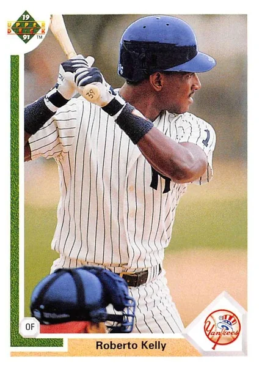

Roberto Kelly "Bobby"
Career Highlights & Facts
(Facts are AI-generated and may require verification)
- Was a central figure in the blockbuster trade that brought a future Hall of Fame outfielder to the organization in exchange for a high-profile multi-sport athlete.
- Served as a bridge between eras for the club, playing alongside a legendary captain during his early development and returning to the same organization to conclude his career.
- Known for his defensive prowess in the middle of the outfield, he was a consistent presence in the lineup during the team's transition period before their late-century dominance.
Would you like to find out more about Roberto Kelly?
Career Totals
| WAR | AB | H | HR | BA | R | RBI | SB | OBP | SLG | OPS | OPS+ |
|---|---|---|---|---|---|---|---|---|---|---|---|
| 20.5 | 4797 | 1390 | 124 | .290 | 687 | 585 | 235 | .337 | .430 | .767 | 106 |
Statistics via Baseball-Reference.com
The Original Clue